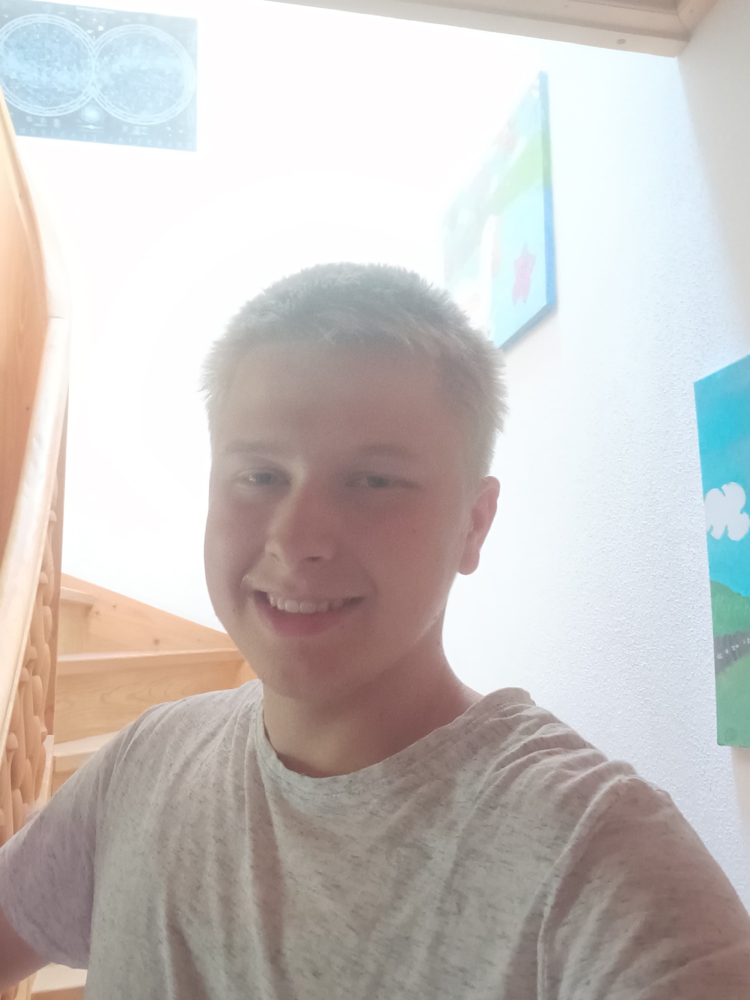

Die Menschen hinter Erlebnis Egerland
Elias
Kronseder
18 Jahre · im Projektjahr 2026
Meine Aufgaben
- Drohnenaufnahmen
- Tonaufnahmen
- Datenmanagement
- Postproduktion
Meine Motivation
Warum ich dabei bin
An unserem Projektseminar Geografie hat mich von Anfang an fasziniert, wie man historische Inhalte nicht nur theoretisch aufarbeitet, sondern sie auch visuell und auditiv in Szene setzt. Mich hat vor allem die technische Herausforderung gereizt, ein solches Filmprojekt mitzugestalten: zu verstehen, wie aus einzelnen Aufnahmen eine zusammenhängende Geschichte entsteht und wie man durch Bild und Ton eine Atmosphäre schafft, die das Erzählte für das Publikum greifbar macht.
Im Laufe des Projekts konnte ich mein Wissen und meine praktischen Fähigkeiten spürbar erweitern. Dabei konnte ich mich an verschiedenen Stellen einbringen: Ich habe die Drohnenaufnahmen übernommen und darauf geachtet, dass sie sich szenisch gut in den Film einfügen, und war für die Tonaufnahmen vor Ort zuständig. Um dem Schnittteam die Arbeit zu erleichtern, habe ich das gesamte Datenmanagement übernommen – also das Material nach Drehtagen und Orten sauber strukturiert und benannt. Im Postproduktionsprozess habe ich dem Schnittteam dann beim Synchronisieren von Bild und Ton geholfen und mit einigem Aufwand in der Nachbearbeitung dazu beigetragen, dass die Aufnahmen noch flüssiger wirken. Vor allem durch die Zusammenarbeit mit Georg Feile habe ich darüber hinaus wertvolle Einblicke in die Fotografie gewonnen.
Gleichzeitig liegt mir auch die menschliche Seite unseres Projekts am Herzen. Die Begegnungen mit Personen, die einen persönlichen Bezug zu dieser Geschichte haben, sind für mich besonders wertvoll. Aus erster Hand von ihren Erinnerungen zu erfahren, macht diese Form der Geschichtsaufarbeitung einzigartig.
Für mich ist dieses Seminar die perfekte Kombination aus technischer Leidenschaft und der Auseinandersetzung mit Geschichte und Menschen. Zu erleben, wie all die verschiedenen Beiträge und Puzzleteile im Team zu einem fertigen Gesamtkunstwerk zusammenfließen, macht für mich den Reiz dieses Projekts aus.